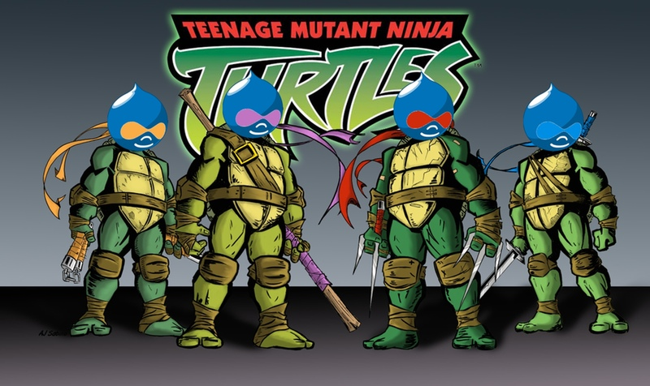
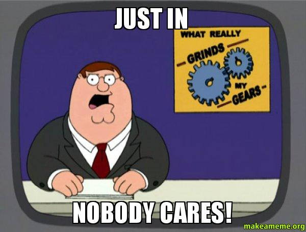
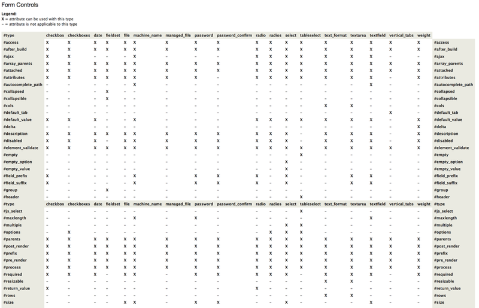
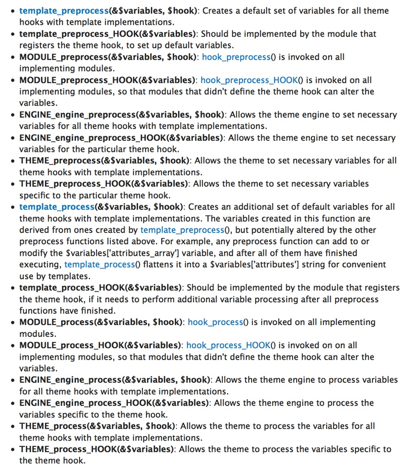
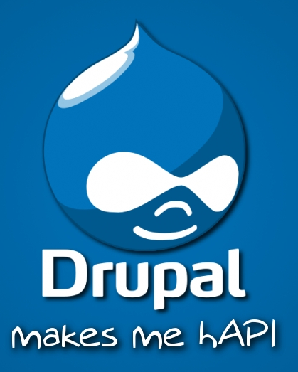

Drupal: Framework or App? Yes!

MidCamp 2014
About Me

Will Long
 @Kerasai
@Kerasai Kerasai on D.O
Kerasai on D.O- http://kerasai.com
About Me
Eric Kirsner
- @eric_hk
- evilehk on D.O
Objectives
- Distinguish key differences between a framework and an app.
- Explain Drupal’s position within the framework vs. app domain.
- Highlight Drupal's key existing functionality.
Agenda
- Define apps and frameworks.
- What is Drupal, really?
- Drupal's framework-y bits.
What is a Web App?
What is a Framework?

What Do Our Friends Say?
What Do Our Friends Say?
- Product: A thing that helps you do something.
- Framework: A thing that helps you make products.
Jeff Eaton
Product, Framework, or Platform? What They Mean, And Why You Should Care
DrupalCon London, 2011
Where does Drupal Fit In?
http://www.cutestpaw.com/images/one-of-these-things-is-not-like-the-other/
What Do Our Friends Say?
What Drupal is today is a tool for building a content management system for a variety of different needs.
Larry Garfield
Drupal is not a CMS
http://www.palantir.net/blog/drupal-not-cms
"Drupal is a Mutant!"
Jeff Eaton
Product, Framework, or Platform? What They Mean, And Why You Should Care
DrupalCon London, 2011
WYGIWYG
Is that a word?
But Really...
WAIT!
Fundamentals of a Web App
- Routing
- Business Logic
- Response
Users & User Management
- Authentication
- Management
- Roles, permissions, access control
- Self-serv
Form API
https://api.drupal.org/api/drupal/developer!topics!forms_api_reference.html/7
Dang, That's a lot of Work
Theme Layer
https://api.drupal.org/api/drupal/includes!theme.inc/function/theme/7
Data Modeling
Schema & DBTNG
- Build and maintain custom tables
- Query building, sanitization
- Expose to other tools
Data Modeling
Fields
- Easy to use
- Easy to extend
- Integrates will with core & contrib
Data Modeling
http://nickveenhof.be/blog/request-drupal-makes-me-hapi-background
(Some of) The Rest
- Security
- Caching & performance
- i18n
- Views
- Token
- Rules